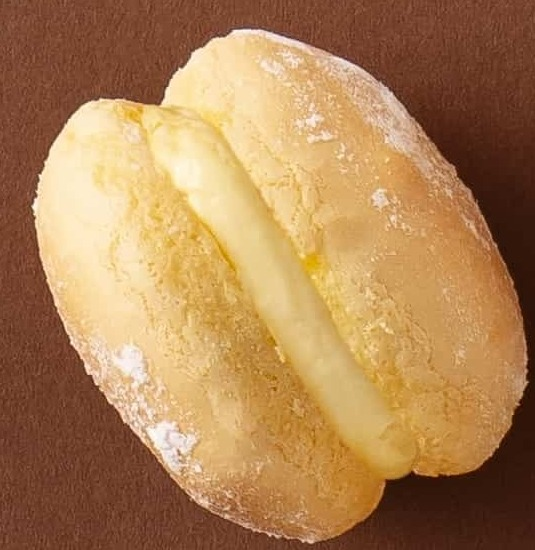

STORYBOARD COLLECTION ／ 12 支提案
馬卡濃的
有趣日常
兩支實拍建議，十支短劇構想。選一支腳本，逐鏡看畫面、動作與台詞。

小烏龜 · 原味馬卡濃PICK A STORY ／ 選擇腳本
挑一支來看
逐鏡分鏡
點選鏡頭切換拍攝與製作說明
圖片中的人物為 AI 示意；標示「實品照片合成」的商品取自小烏龜本機實拍照。商品比例為視覺估算，拿取、咬下和開盒請依真實產品拍攝；部分雙人構圖與演員動作仍需調整。
STORYBOARD COLLECTION ／ 12 支提案
兩支實拍建議，十支短劇構想。選一支腳本，逐鏡看畫面、動作與台詞。

小烏龜 · 原味馬卡濃PICK A STORY ／ 選擇腳本
圖片中的人物為 AI 示意；標示「實品照片合成」的商品取自小烏龜本機實拍照。商品比例為視覺估算，拿取、咬下和開盒請依真實產品拍攝；部分雙人構圖與演員動作仍需調整。